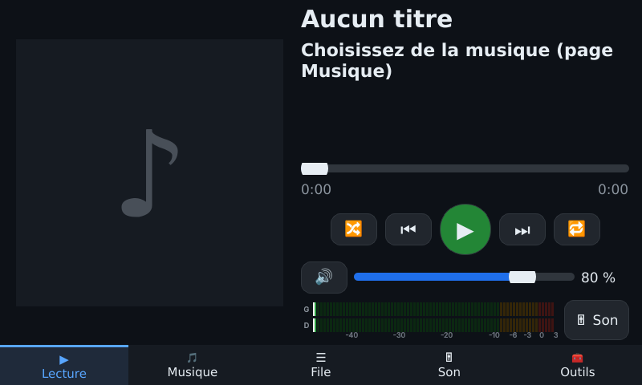
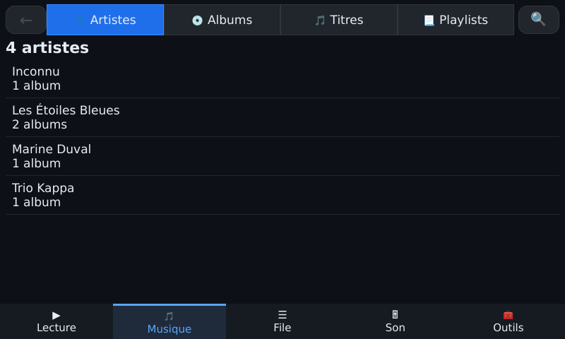
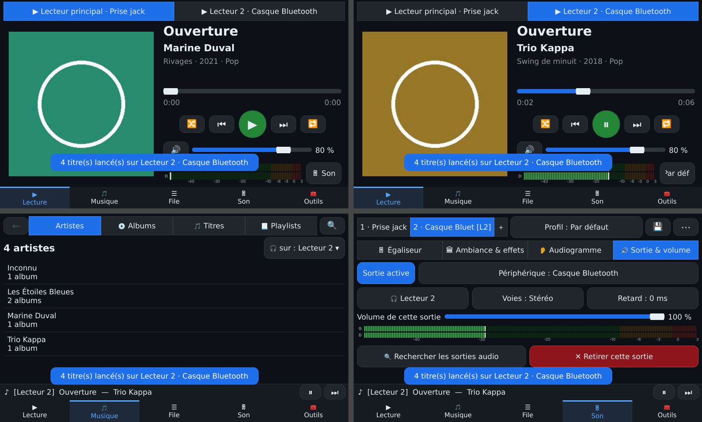

10. Version tactile (Raspberry Pi et autres cartes)
C'est le même logiciel, avec une interface plein écran pensée pour le doigt. L'installation est décrite au chapitre 2.
Les cinq pages
La barre du bas donne accès à ▶ Lecture · 🎵 Musique · ☰ File · 🎚 Son · 🧰 Outils.

Page Lecture (écran 800×480).

Page Musique.
| Page |
Contenu |
| Lecture |
Pochette, titre, avancement, ⏮ ⏯ ⏭, aléatoire 🔀, répétition 🔁, volume, vumètre. En haut, une touche par lecteur pour choisir celui qu'on pilote. |
| Musique |
Artistes → Albums → Titres, Playlists, et recherche 🔍 avec un clavier AZERTY à l'écran. |
| File |
La liste de lecture en cours : mélanger, retirer un titre, enregistrer en playlist. |
| Son |
Une touche par sortie (1, 2, 3, ＋), puis quatre onglets : Égaliseur, Ambiance et effets, Audiogramme, Sortie et volume. Le profil audio se choisit en haut. |
| Outils |
Les tuiles décrites ci-dessous. |
Gestes
- Appui court sur un titre : le lire.
- Appui long : menu (lire ensuite, ajouter à la file ou à une playlist, lire sur un autre lecteur, identifier…).
- Glisser : faire défiler les listes, avec inertie.
Les tuiles de la page Outils
- 🗂 Ranger une clé USB ou un disque, avec les interrupteurs Supprimer les doublons et WAV/OGG/WMA → MP3 ;
- 🎵 Compléter les infos manquantes ;
- 💿 CD audio → MP3 et ▶ YouTube → MP3 ;
- 🔄 Actualiser la bibliothèque et ⏏ Éjecter un support ;
- 📶 Bluetooth : mettez le casque ou l'enceinte en mode appairage, touchez-le dans la liste, Musicothèque l'appaire et le connecte ;
- 📱 Télécommande : QR code et code d'appairage du téléphone (chapitre 11) ;
- ⚙ Paramètres : clé AcoustID, dossier de la bibliothèque, qualité MP3, luminosité, quitter ;
- ⏻ Éteindre / redémarrer.
Clé USB
Quand vous branchez une clé ou un disque, Musicothèque propose :
- Écouter : lire la musique de la clé sans rien modifier ;
- Ranger dans ma bibliothèque : copier la musique en la classant.
Avant de retirer la clé, passez par ⏏ Éjecter un support.
Une autre musique sur une autre sortie
- Son ▸ ＋ ▸ Ajouter un lecteur indépendant : le Lecteur 2 est créé avec sa sortie.
- Dans Musique, appui long sur un titre, un album ou une playlist ▸ 🎧 Lire sur un autre lecteur.
- En haut de la page Lecture, touchez « Lecteur 2 · Casque Bluetooth » pour le piloter. Les pages Musique et File suivent le lecteur choisi.

Deux lecteurs : chacun sa musique et ses sorties.
Taille d'écran
L'interface s'adapte à l'écran, en paysage comme en portrait, de 480×320 à 1920×1080. La page Outils passe de 2 à 4 colonnes selon la largeur.
◀ 9. Plusieurs sorties et plusieurs lecteurs · Sommaire · 11. Télécommande Android ▶